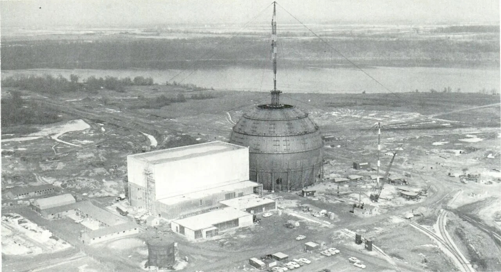
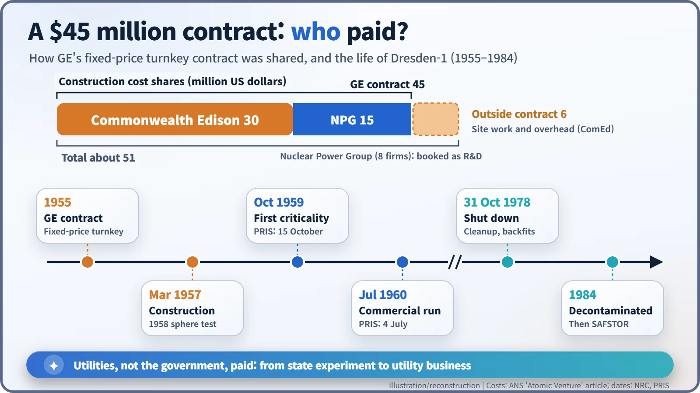
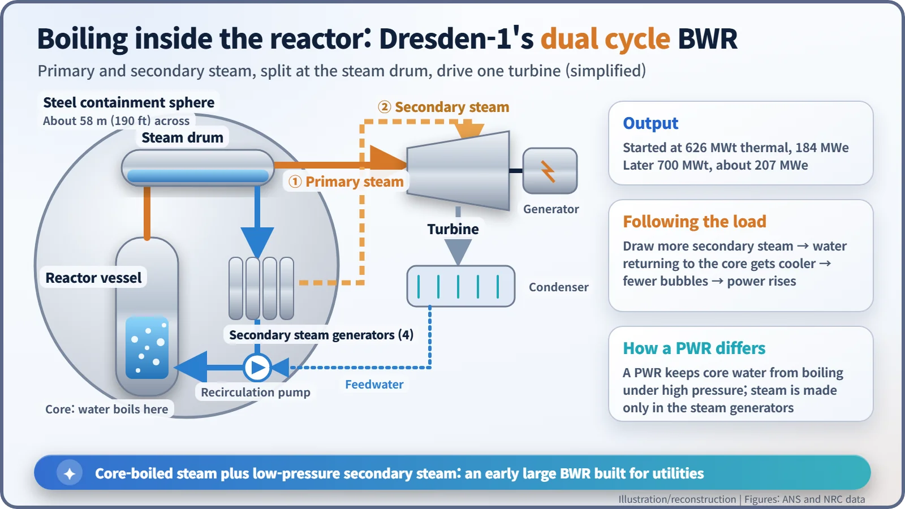
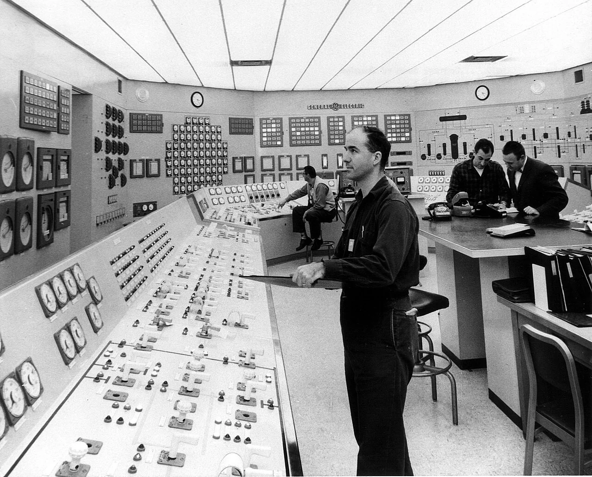
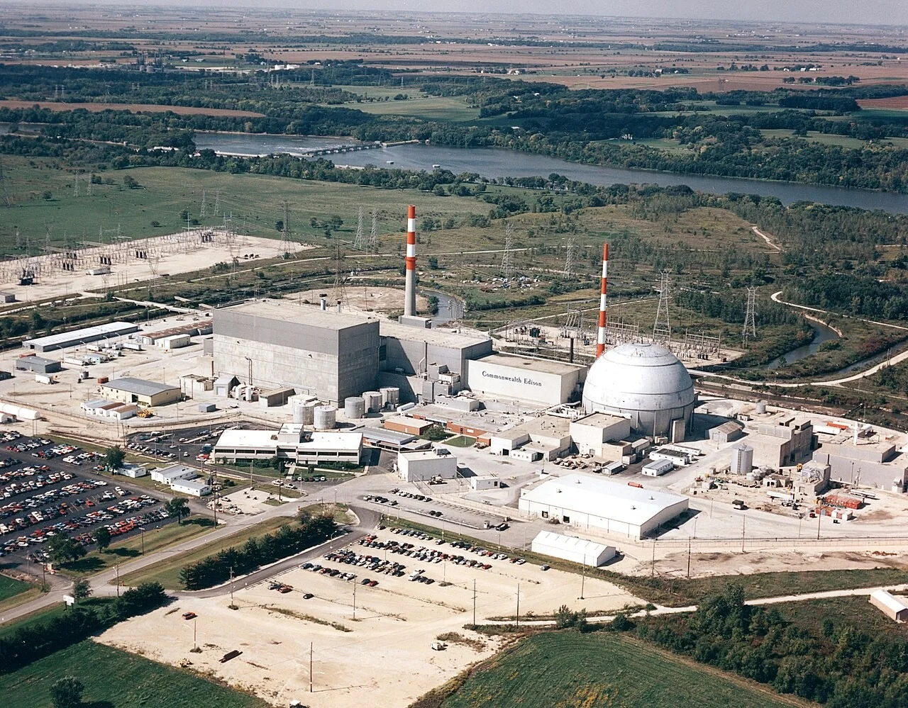

Nuclear History · 186
A 58-Metre Steel Ball on the Illinois Prairie — Dresden-1, the First Large Nuclear Plant Built with Private Money (1960)
A fixed-price turnkey contract, an eight-company consortium and a dual-cycle boiling water reactor carried US nuclear power from state experiment to utility business.
Dresden-1, near Morris, Illinois, was the first full-scale nuclear power plant in the United States whose construction was paid for by companies rather than the government. Built by General Electric for Commonwealth Edison under a $45 million fixed-price contract, its dual-cycle boiling water reactor began commercial operation on 4 July 1960 and ran until 1978.
A steel ball on the prairie
On 27 March 1958, on flat farmland near Morris, Illinois, a steel ball 190 feet (about 58 metres) across was being pressure-tested. Built from steel plates a little over three centimetres thick, it was the containment that would enclose a nuclear reactor. Its owner was not the US government. It belonged to Commonwealth Edison, the utility that supplied Chicago with electricity. [2]

When reactors belonged to the state
Under the Atomic Energy Act of 1946, reactors and nuclear fuel in the United States were government property. A utility that wanted nuclear electricity simply could not own a reactor. The 1954 revision of the Act changed that, allowing private companies to own and operate nuclear facilities. [4]
Commonwealth Edison was the first to push hard through that open door. At Shippingport in Pennsylvania, built at about the same time, the reactor itself was owned by the Atomic Energy Commission (AEC). Dresden was a utility's plant from the start.
A nuclear plant with a price tag
In 1955 Commonwealth Edison signed a contract with General Electric (GE). GE would deliver the whole plant "turnkey" — the customer just takes the keys — for a fixed price of $45 million. Bechtel, as GE's subcontractor, did the engineering and construction. [2]
Who paid? Commonwealth Edison put in $30 million. The other $15 million came from the Nuclear Power Group, an eight-company consortium led by Commonwealth Edison that included Pacific Gas & Electric, Union Electric and Bechtel. Outside the contract, Commonwealth Edison spent a further $6 million on site work and overhead. The target generating cost, excluding research and development, was about three-quarters of a cent per kilowatt-hour. [2]
It would go too far, though, to say there was no public help at all. The Nuclear Power Group wrote off its share as research and development, and the technology itself grew out of the AEC's boiling-water reactor experiments. The precise claim is narrower: this was the first large plant whose construction was paid for by companies rather than by the government.

Boil the water, spin the turbine: the "dual cycle"
Dresden-1 was a boiling water reactor (BWR): water boils inside the reactor, and that steam drives the turbine. Many engineers had feared that boiling in the core would make a reactor unstable, but experiments in Idaho showed the opposite — steam bubbles tend to damp the power by themselves. [4]
GE added a twist. A steam drum high above the reactor separated steam from water. The steam went straight to the turbine, while the hot water left in the drum passed through four secondary steam generators to make a second, lower-pressure supply of steam. Hence the name "dual cycle". When demand rose and more secondary steam was drawn off, the water returning to the core came back cooler, the core held fewer bubbles, and power went up — a way to follow the load with less control-rod movement. It was a design shaped around a utility's needs. [2] [4]

From autumn 1959 to autumn 1978
The reactor first went critical in October 1959 (15 October, according to the IAEA's PRIS database). It was connected to the grid on 15 April 1960, reached full power in June and began commercial operation on 4 July 1960. It started at 626 MW of heat and 184 MW of electricity and was later raised to about 207 MWe; published figures vary slightly with date and basis. [1] [2] [3]

The government caption on this photo puts it plainly: "The nation's first full-scale, privately financed atomic power facility." The companies even made a half-hour promotional film, Atomic Venture (1961), and a near-twin plant, SENN (Garigliano), was built in Italy. [2]
Dresden-1 shut down on 31 October 1978 — not after an accident, but for decontamination and backfit work. Commonwealth Edison then judged the upgrades too costly and retired the unit instead of restarting it. In 1984 the reactor system was chemically cleaned and the plant entered SAFSTOR, a state of deferred decommissioning. Its spent fuel now sits in dry storage on site, and final dismantling is planned for after Units 2 and 3 on the same site shut down. [1] [2]

"First" comes with conditions
Calling Dresden-1 "the world's first nuclear power plant" would be wrong. EBR-I first lit bulbs with nuclear electricity (1951), Obninsk first fed a power grid (1954), and Calder Hall was the first to run at commercial scale (1956). Dresden's "first" holds only with three qualifiers: in the United States, at full scale, with private money.
Those qualifiers still mattered. Dresden marked the point where nuclear power stepped from a state experiment into a utility business. GE's fixed-price approach led to larger turnkey deals a few years later, and the boiling water reactor became one of the two main families of reactors in the world. The steel ball on the prairie is still there, waiting its turn to be taken apart.